固定原生样本 24900
输入原生20×20。20倍模型输出400×400；40倍模型输出800×800。下方统一显示800×800，20倍图使用普通双三次插值再放大2倍，视野完全一致。滑块可切换到原始低清的最近邻显示，直接比较超分前后。
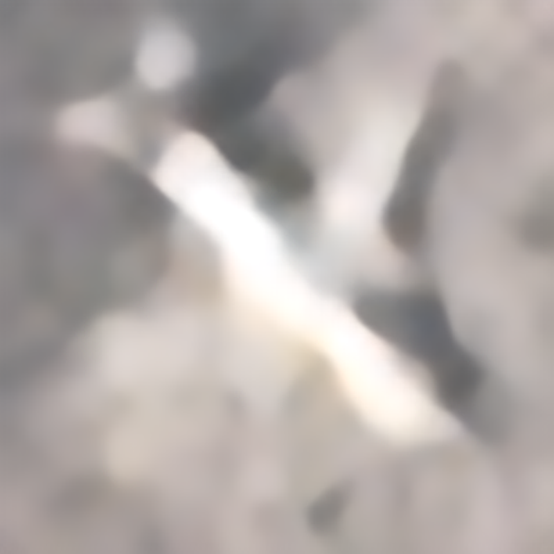
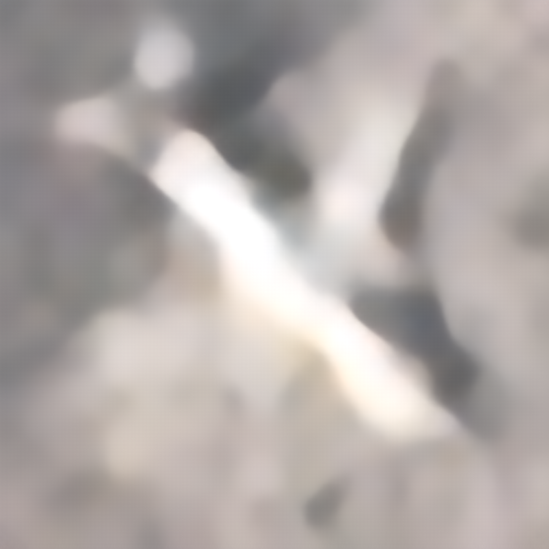
尺寸匹配与退化对照
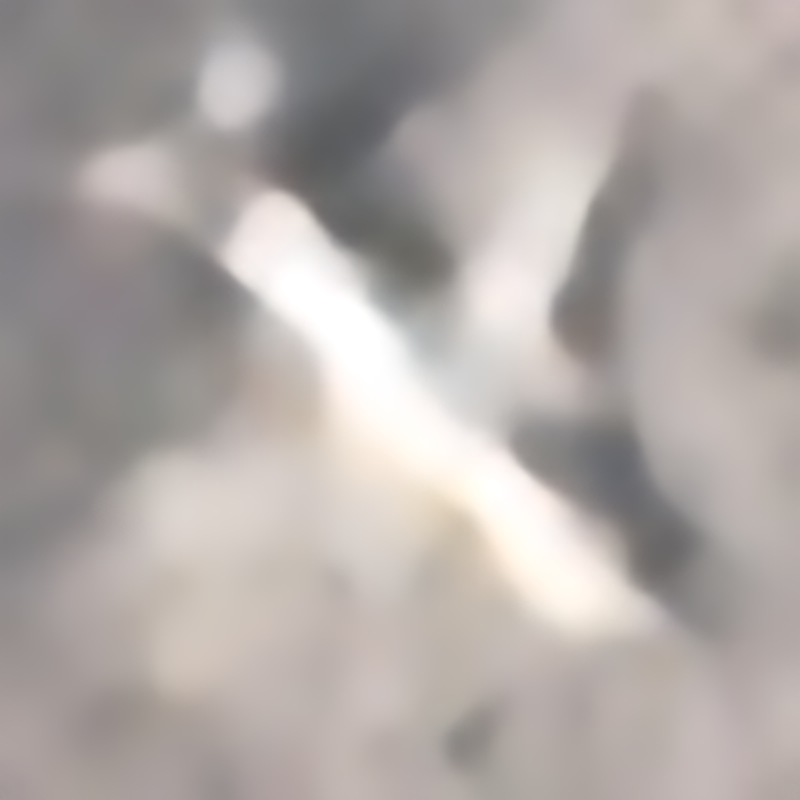
本轮固定预算下，40倍没有带来明显的细节提升：在共同大图参考上，飞机区域PSNR比同输入20倍低约0.010 dB；五张真实样例中，两者均以平滑轮廓为主。尺寸与退化匹配在模拟退化测试上有小幅收益，但真实20×20图片仍未出现稳定的细节突破。
A20与D40共用低清图、来源顺序和退化。A把原图参考降采样2倍；D保留原图像素，仅补少量边缘以满足整数倍率，补边不参与损失。两组都是207万参数中型网络，40倍增加一次权重共享循环。原图不变时，训练输入通常约25–40像素，并非全是20×20。
B、C仍固定20倍，90%按飞机长边及占比分档抽取真实俯视飞机，10%补充原有整图再缩小2、3、4倍的样本。B为干净降采样，C加入方向性模糊、噪声与少量轻压缩；两者的来源、清晰参考和抽样顺序相同。分档来自64张图中57张可估框，具有不确定性；退化模型尚未物理标定。
全部60个测试来源×2种退化，各120次。表内为飞机粗区域RGB PSNR。共同小网格将40倍预测缩小2倍；共同大网格将20倍预测普通插值放大2倍。只能比较同一列，不能跨两列比较高低。
| 路线 | 输入 | 共同小网格/dB | 共同大网格/dB | 选中追加步数 |
|---|---|---|---|---|
| A：同输入20倍 | 干净降采样 | 21.5229 | 20.9977 | 1000 |
| A：同输入20倍 | 模拟成像退化 | 21.3166 | 20.8132 | 1000 |
| D：同输入40倍 | 干净降采样 | 21.5021 | 20.9817 | 1000 |
| D：同输入40倍 | 模拟成像退化 | 21.3093 | 20.8094 | 1000 |
全部398对测试×2种退化，各796次。其中218对俯视飞机裁图仅来自8个测试源图组，不能当作218个独立场景；180对原有整图来自60个来源。变化是相对同一初始中型权重；这组和A/D的数据组成及验证规则不同，不能当作仅改变一个因素的比较。
| 模型 | 来源 | 输入 | 飞机区域PSNR | 相对初始/dB |
|---|---|---|---|---|
| B：尺寸匹配20倍 | 原有整图 | 干净降采样 | 20.8375 | +0.0616 |
| B：尺寸匹配20倍 | 原有整图 | 模拟成像退化 | 20.4598 | -0.0482 |
| B：尺寸匹配20倍 | 俯视飞机 | 干净降采样 | 19.8934 | +0.0525 |
| B：尺寸匹配20倍 | 俯视飞机 | 模拟成像退化 | 19.3470 | -0.0374 |
| C：尺寸＋退化20倍 | 原有整图 | 干净降采样 | 20.6862 | -0.0898 |
| C：尺寸＋退化20倍 | 原有整图 | 模拟成像退化 | 20.5282 | +0.0203 |
| C：尺寸＋退化20倍 | 俯视飞机 | 干净降采样 | 19.8514 | +0.0105 |
| C：尺寸＋退化20倍 | 俯视飞机 | 模拟成像退化 | 19.4695 | +0.0851 |
每组只依据验证集选权重，第0步也可入选。1000步是本轮受控预算，不代表充分收敛。两组起点都是已训练的20倍权重，40倍新增循环仍需适应；相同步数也不等于相同计算量。重复使用既有研究数据属于探索性对照，不能冒称全新盲测。
新增32000份输出已逐文件核验，完整结果保存在服务器。真实数据没有对应高清真值，不报告PSNR。五张展示图沿用训练前固定选择。PlanesNet：Bob Hammell／PlanetScope，CC BY-SA 4.0，衍生图沿用该许可。
输入原生20×20。20倍模型输出400×400；40倍模型输出800×800。下方统一显示800×800，20倍图使用普通双三次插值再放大2倍，视野完全一致。滑块可切换到原始低清的最近邻显示，直接比较超分前后。



输入原生20×20。20倍模型输出400×400；40倍模型输出800×800。下方统一显示800×800，20倍图使用普通双三次插值再放大2倍，视野完全一致。滑块可切换到原始低清的最近邻显示，直接比较超分前后。
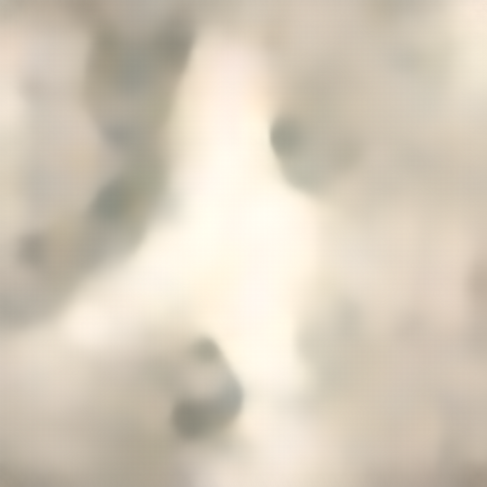
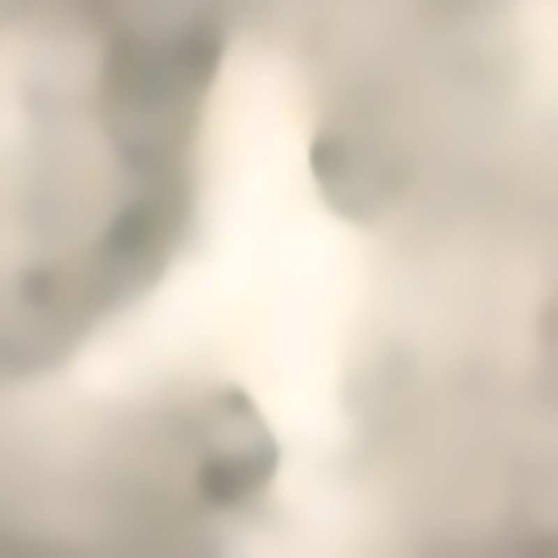
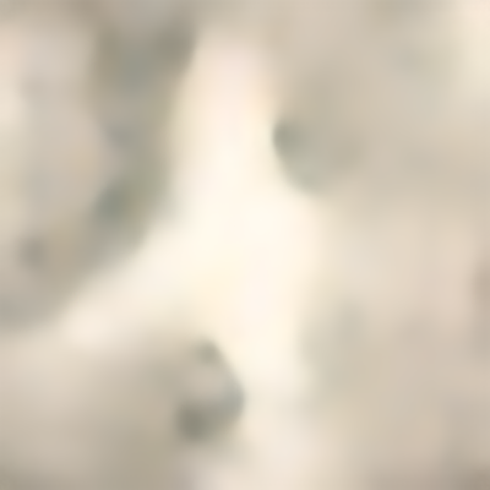
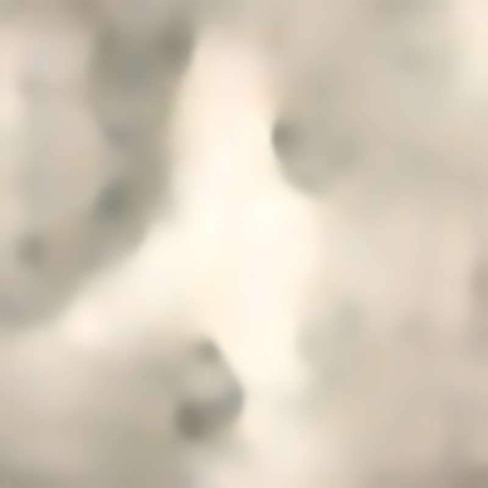
输入原生20×20。20倍模型输出400×400；40倍模型输出800×800。下方统一显示800×800，20倍图使用普通双三次插值再放大2倍，视野完全一致。滑块可切换到原始低清的最近邻显示，直接比较超分前后。
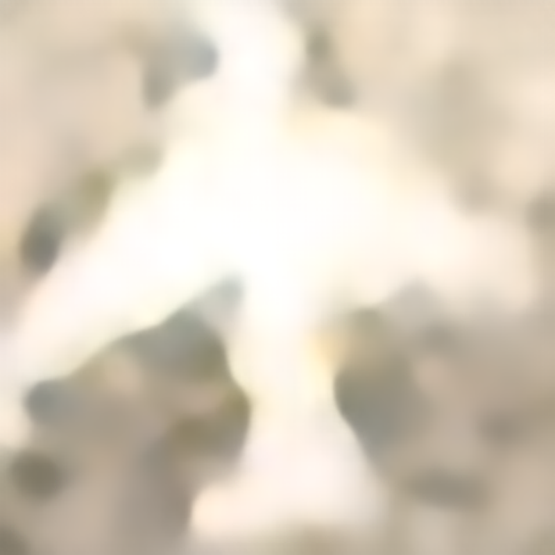
输入原生20×20。20倍模型输出400×400；40倍模型输出800×800。下方统一显示800×800，20倍图使用普通双三次插值再放大2倍，视野完全一致。滑块可切换到原始低清的最近邻显示，直接比较超分前后。
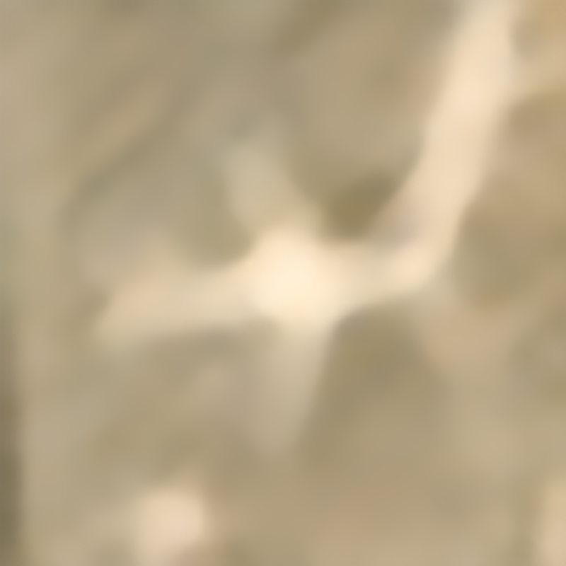
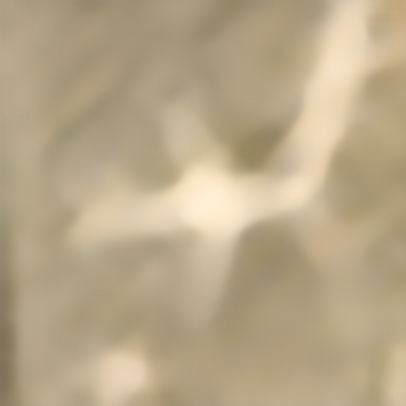
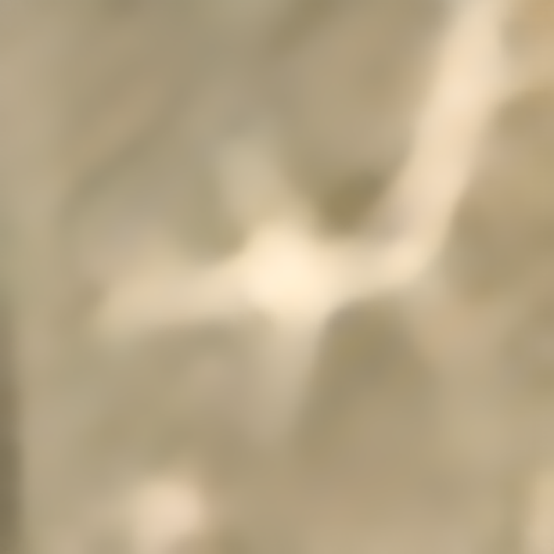
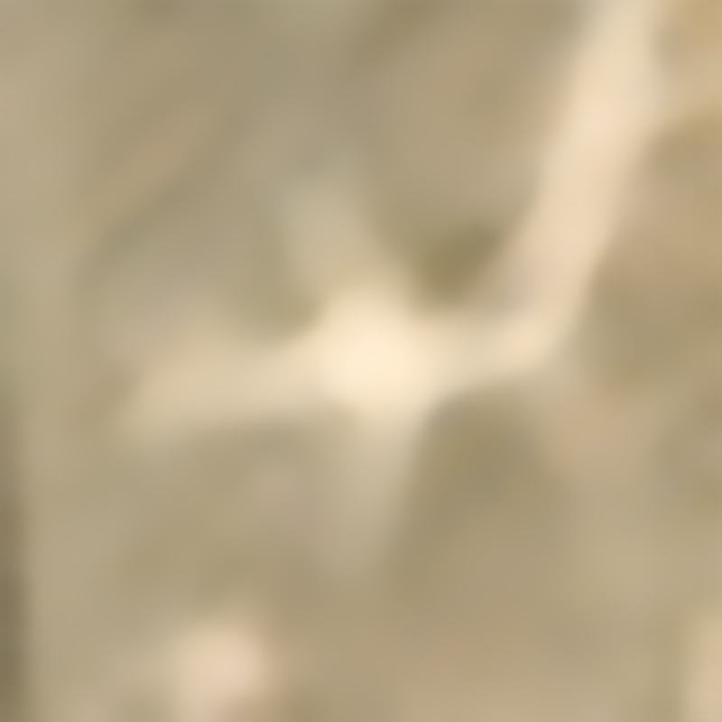
输入原生20×20。20倍模型输出400×400；40倍模型输出800×800。下方统一显示800×800，20倍图使用普通双三次插值再放大2倍，视野完全一致。滑块可切换到原始低清的最近邻显示，直接比较超分前后。
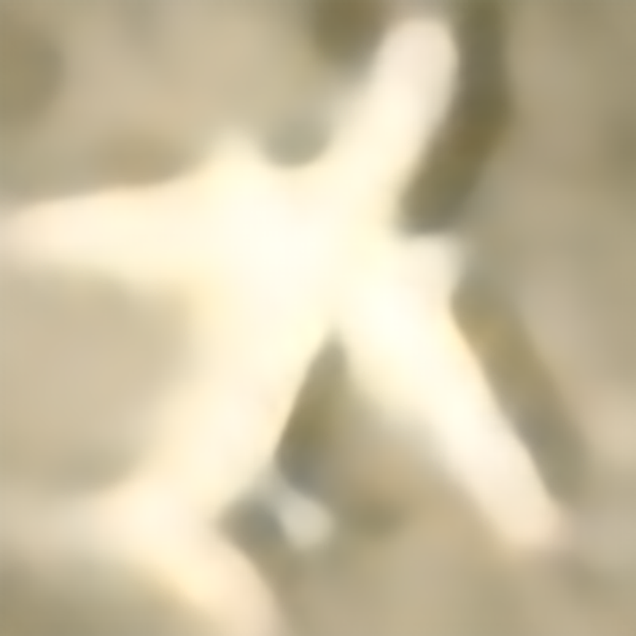
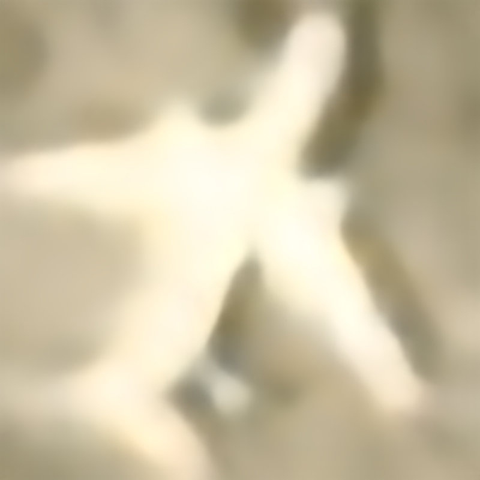